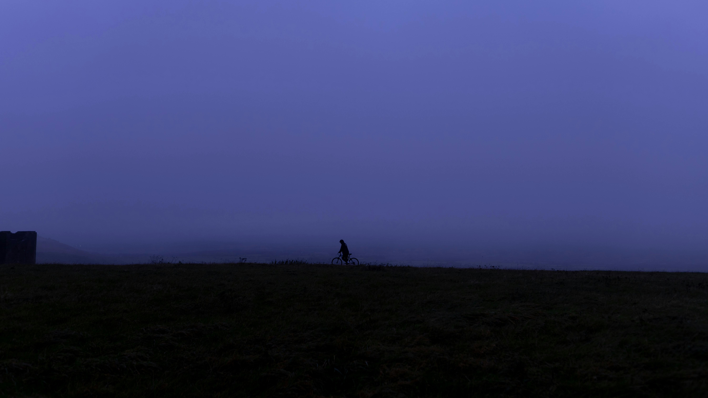

colors using rgb values
colors using hex code
position in images
Experience the beauty of high places.
Visit pexels.com

Sky
"I really like the color of the night sky!"
"It looks so empty and vast!"
"Looks so calming!"
image's filters
sepia filter
blur filter
invert filter
Class Exercise